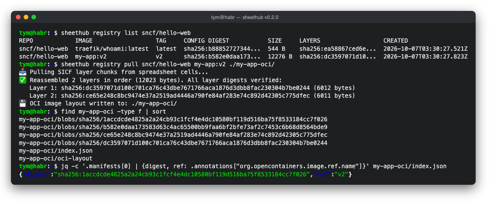

SheetHub, our GitLab-style forge that lives in a spreadsheet, has a new release, and this one is special for two reasons. Its container registry now follows SICF, the Sheet-Native Image Container Format, and almost all of the work in it came from a community contributor.
What's new
The registry stores container images directly in spreadsheet cells. With this release an image is described the way the rest of the container world describes it: an OCI config plus an ordered list of layer digests. Layers live in their own tab and are content-addressed, so a base layer shared by several images is stored only once, and deleting an image removes a layer only when nothing else still refers to it. An image's digest is always the digest of its config, exactly as SICF prescribes, so Sheeternetes kubelets can resolve sicf:<name> references straight from the forge.
Pulling got smarter too. A single-layer image still comes back as one file, verified against its SHA-256. A multi-layer image is now written as a proper OCI image layout directory, with an index, a manifest, the config and every layer blob checked on the way out, which means ordinary container tooling can pick it up from there.

Older spreadsheets keep working. If your forge still has the original Registry and RegistryChunks tabs, SheetHub reads them and setup() migrates them into the new tabs, even when an empty new tab already exists.
Thank you, Prateek
Most of this release is the work of @prateeekbuilds. They first built the registry itself, sharding images into ranges of base64 cells, then set up the CI pipeline that runs the test harness and shellcheck on every pull request, and then took on the SICF alignment. When the review turned up a multi-layer bug and a migration gap, they came back the next day with fixes and a dozen new tests. That is exactly the kind of contribution a foundation exists for, and we are very grateful.
If you would like to follow in their footsteps, there are open issues across the sncfoundation organisation, and the SICF specification itself in sncfoundation/sci could use more hands.
- Release notes: SheetHub v0.2.0
- The SICF alignment: sheethub#6, follow-ups in #7
- Earlier: A container registry inside a spreadsheet